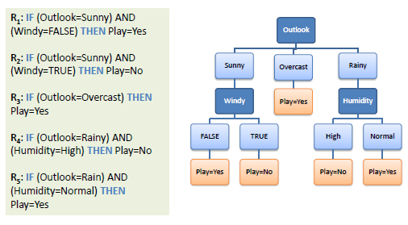
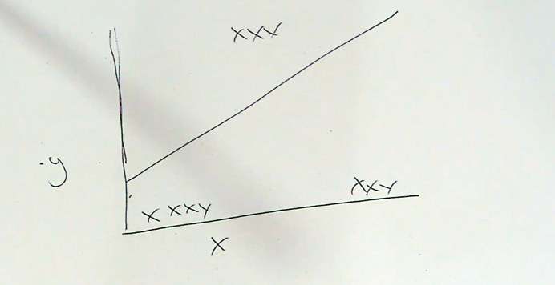
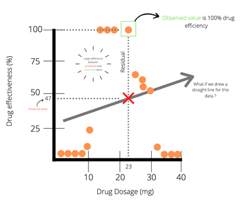
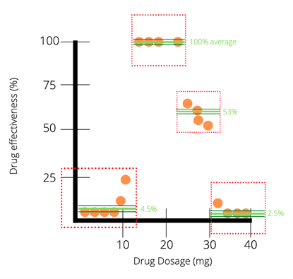
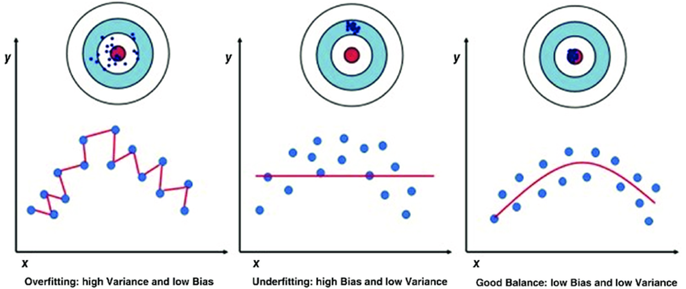
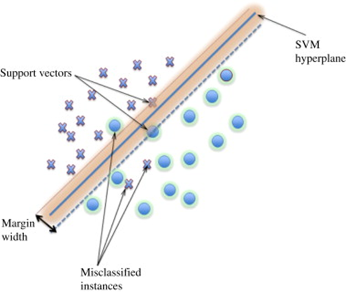

6 Week 7 Classification
6.1 Summary
6.1.1 Machine learning
Machine learning: science of computer modeling of learning process.
Machine learning is a search through all the data explain the input data can be used on new input data.
Expert systems:
A system that uses human knowledge to solve problems that normally require human intelligence.
Knowledge from expert (experience)
When humans have some generalizations, we can reach a logical assumption or conclusion = inductive learning
6.1.2 Classification and regression trees (CART)
Decision trees are hierarchical classifiers used for both classification and regression tasks.
Classification trees
classify data into two or more discrete (can only have certain values) categories
A decision tree can easily be transformed to a set of rules by mapping from the root node to the leaf nodes one by one.

3. Regression trees
1. predict continuous dependent variable
2. subset the data into [smaller chunks]{.underline}
Case 1; one line doesn't fit the whole dataset:

Case 2; regression tree; divide to different subset then doing regression on each individual component.
So in this case, the tree uses the average value (100%) as the prediction value for dosages between 14.5 and 23.5.6.1.3 Overfitting
bias
difference between predicted value and true value
oversimplifies model
variance
variability of model for a given point
(means does not genearlise well (the model is too good! ))

6.1.4 supervised classification (Image)
Main processes:
- Class definition
- Define the classes or categories into which you want to classify the data. These classes should be mutually exclusive and collectively exhaustive.
- Assign labels or class identifiers to the examples in your training dataset.
- Pre-processing
- Clean the data by handling missing values, outliers, or noise. - Normalize or standardize the features to ensure that they have a similar scale.
- Split the data into (training and testing sets)
- Training
- Select a suitable classification algorithm
- Train the model using the labeled examples from the training dataset (the model learns to map input features to the corresponding class labels)
- Pixel assignment
- pixel assignment involves assigning each pixel in the image to a specific class label based on the trained model’s predictions
- accuracy assessment
- Evaluate the accuracy of the classification model
- Compare the model’s predictions with the true labels from the test dataset to assess its performance
- Adjust the model’s parameters or features
Common methods:
Maximum likelihood
SVM (support vector Machine)
Support Vector Machine (SVM) is a supervised learning classification algorithm. which is to find a middle margin (an optimal separating hyperplane) that separates vertors of different classes while maximizing the margin of separation.
(Basically) a linear binary classifier
Maximum margin between two classes of training data = maximum margin classifier
- it finds the divide in the data and places a line at the division from the closest points
support vectors mean Points on the boundaries (and within) are
separating hyperplane = Middle margin
some misclassifications may happen and cause misclassified instances

6.2 Application
6.2.1 Random Forest Model for Crop Type and Land Classification
Overall Machine Learning Workflow:
Pre-Processing
Preparing Label data
Inputing Imagery
Training model
- Dividing Trainning and testing data set
- split 20% of the data to reserve for testing the quality of the trained model
- listing Main types of objects
- array([buildings,‘Forestland’, ‘Grassland’,‘Maize’,‘Shadow’, ‘Sugarcane’, ‘Sunflower’, ‘Waterbody’], dtype=object)
- Some index may help trainning model
- Ndvi
- Ndwi
- Dividing Trainning and testing data set
Evaluate the model
- A confusion matrix
Mapping the result
6.3 Reflection
In this week, we learn some Classification methods that slice data differently, aiming to categorize data into classes or values. It also covers some algorithms of supervised classification for image such as SVM.
In more detail, the decision between a single decision tree or a forest of trees depends on the desired model complexity and robustness. Hyperparameters govern the behavior of the classifier, influencing its performance and generalization ability.
6.3.1 New terms:
inductive learning = given context we can use experience to make judgement
maximum margin classifier 最大间隔分类器
separating hyperplane 分割超平面